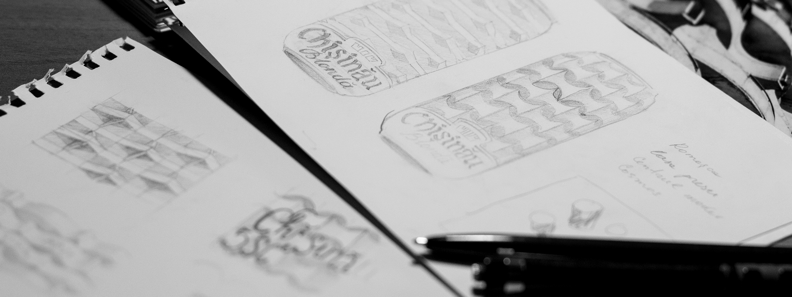
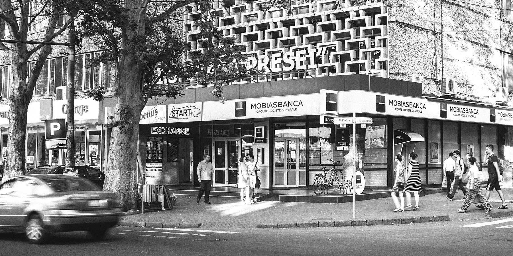
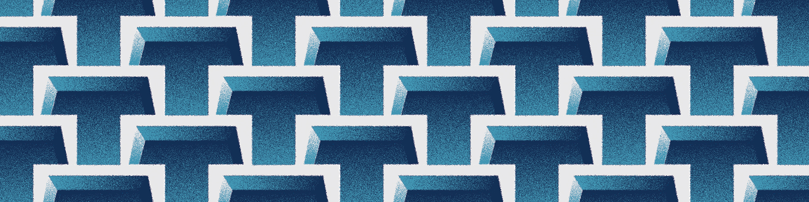
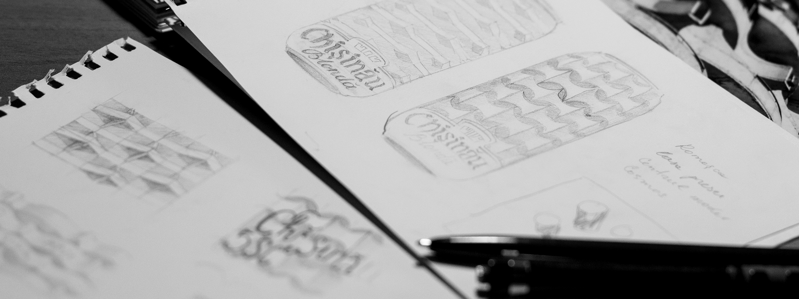
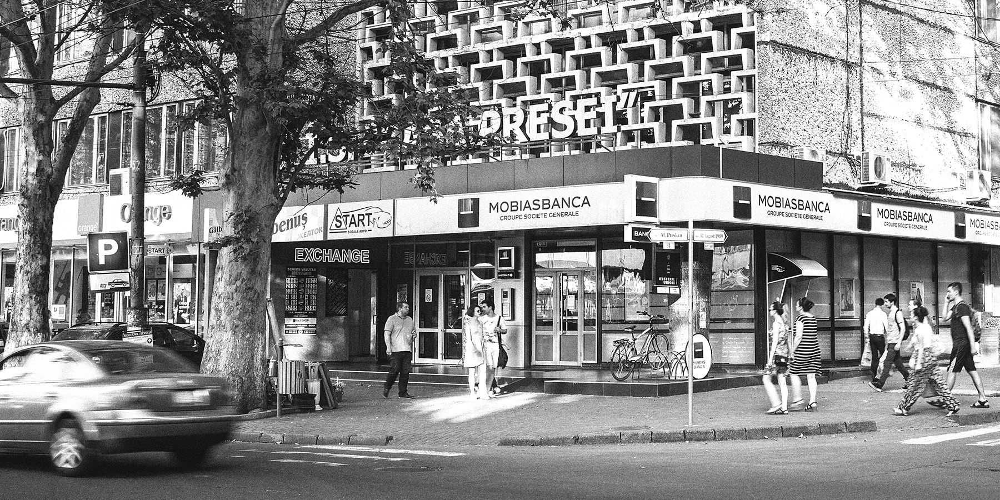
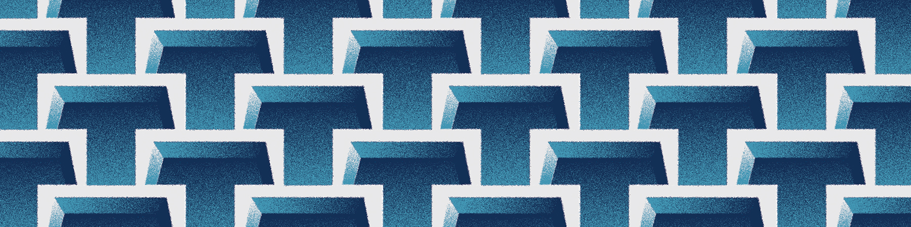

Chisinau
Chisinau, as we know it.
Chisinau is usually depicted in postcards by the city hall, central cathedral or the arch of glory. Of course, these are important buildings for our country, but they do not transmit the feeling of the city, the real Chisinau, only locals know.
A big part of the city was built in the ‘70s and has a nice social modernism mark. The buildings are easily recognizable by the harsh straight lines, dramatic structures and mainly geometrical patterns. This kind of architecture influences the rythm and the vibes of the city. Today these constructions are just reminiscence of he past, points of interest for tourists coming from the West.
But for us, they is much more than that. These are the forms we recognize our city by. For more then 40 years, we are passing by them, day by day. They had been here a lifetime, around them we have built our own, personal stories. Stories that can be found in our personal archives only, stories we have been caring for so long in our souls, stories we won't give up on.
Knowing our history is knowing ourselves.
And now, when Chisinau celebrates its 580 years, the most biggest local brewery, the main brand of which bears the city's name, has chosen us to create an anniversary design for its cans. The idea we came up with is that we want to show Chisinau as we know it. Finding iconic buildings known not even for their shape, but mostly for the special patterns, that are like the visual rhythms of this city. We've decided to wrap up the beer cans in these patterns, so that people have unconsciously the feeling of déjà vu.
 




